Calculate the Diameter of a Binary Tree
Problem Statement: Given the root of the Binary Tree, return the length of its diameter. The Diameter of a Binary Tree is the longest distance between any two nodes of that tree. This path may or may not pass through the root.
Examples
Example 1: Input: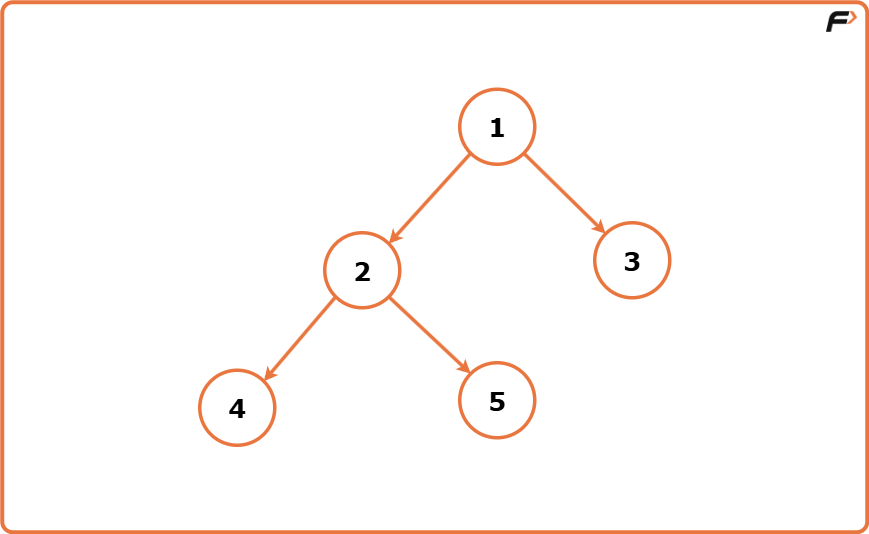
Output: 4 Explanation: The distance between the leftmost node 4 and the rightmost node 3 is 4, since this is the longest horizontal distance of the binary tree, hence its diameter.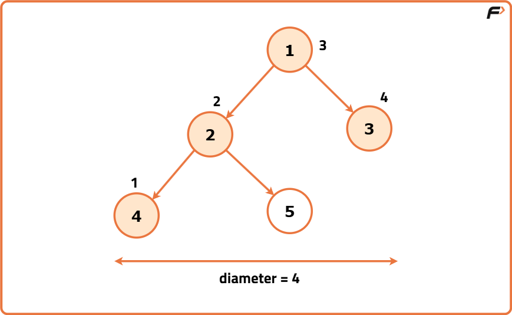
Example 2: Input: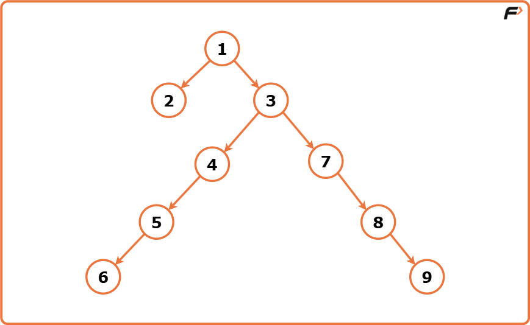
Output : 7 Explanation: The distance between the leftmost node 4 and the rightmost node 3 is 4, since this is the longest horizontal distance of the binary tree, hence its diameter.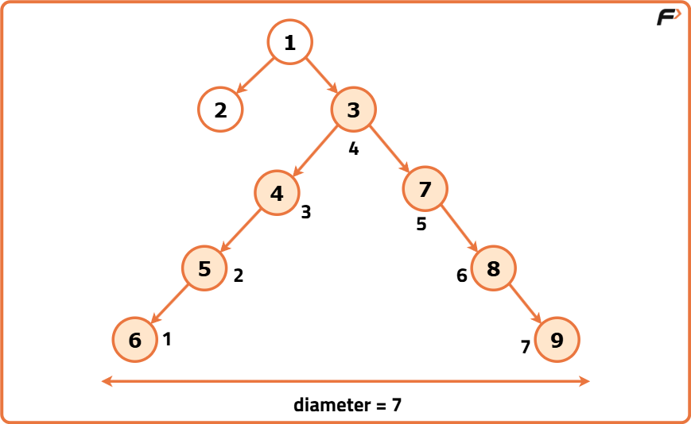

Disclaimer: Don’t jump directly to the solution, try it out yourself first.
Brute Force Approach
Algorithm
To understand how wide a binary tree can be, imagine each point (node) in the tree as a possible turning point for the longest path. This turning point is where the path bends and includes the highest levels going left and right.
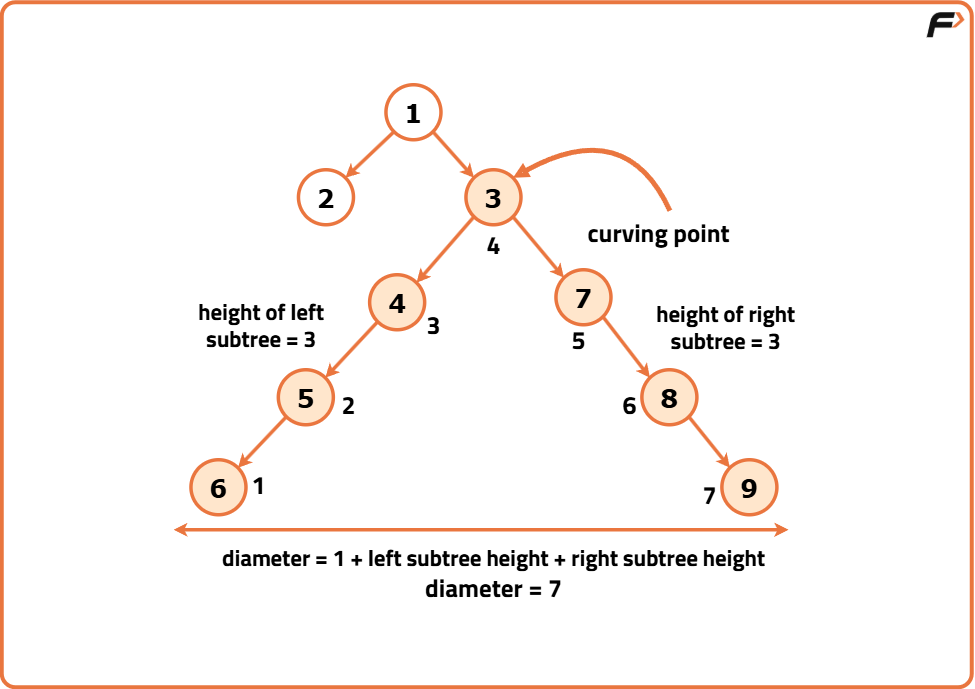
Dry Run
After checking all points, the largest width we recorded is the final result.
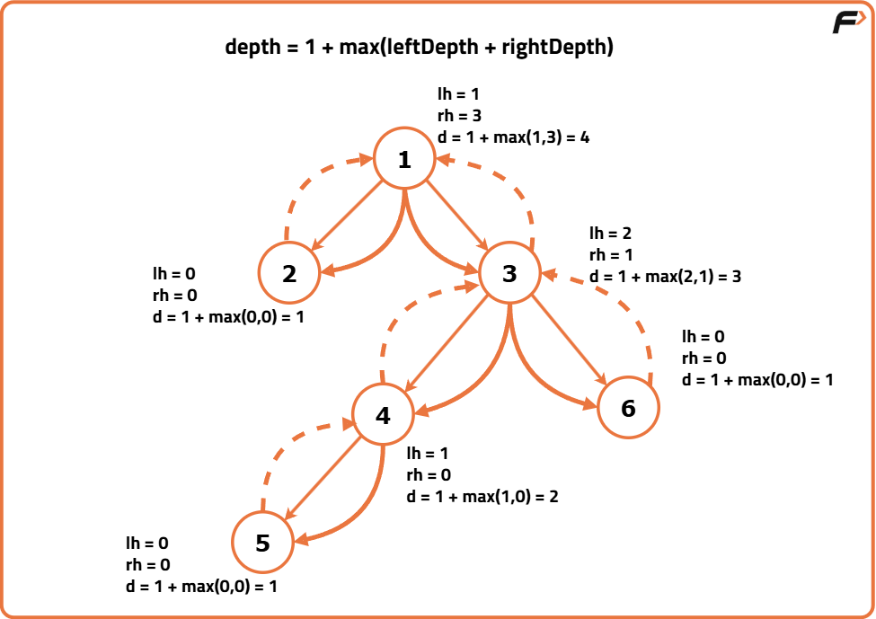
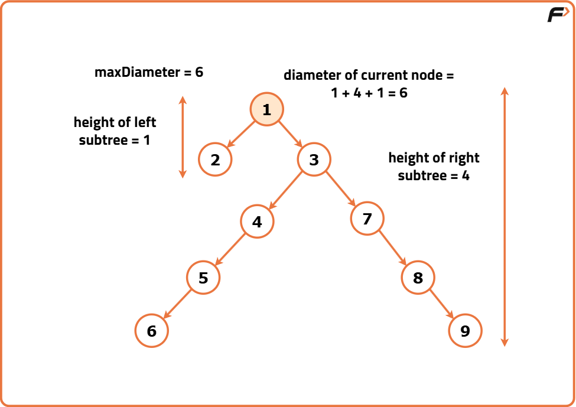
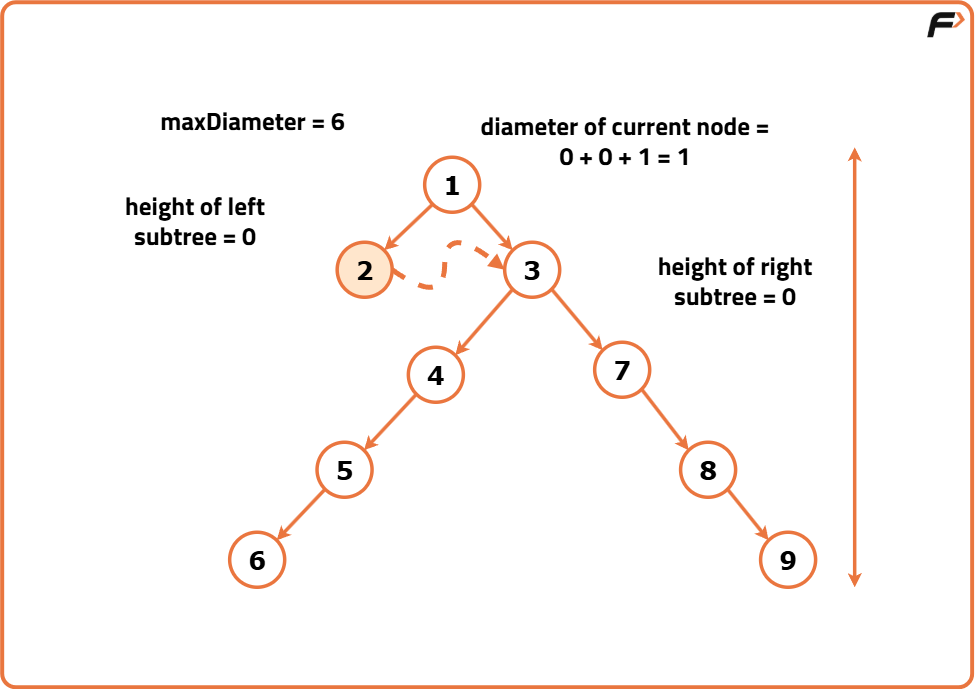
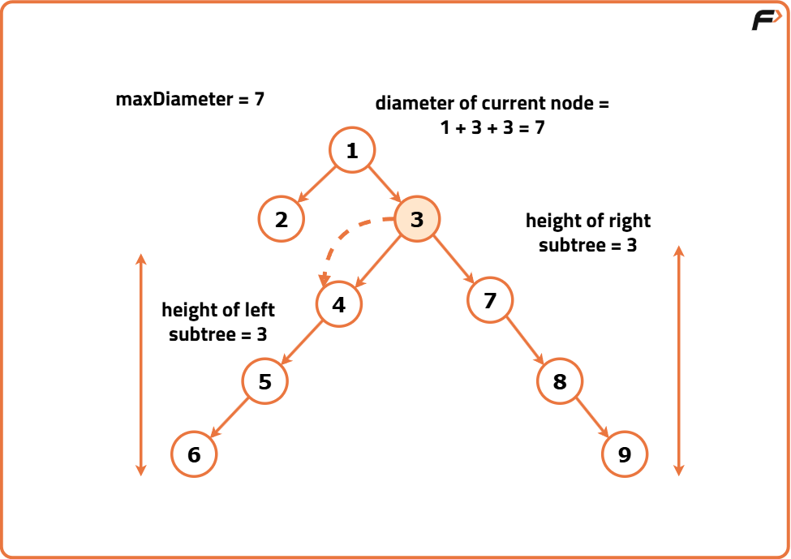
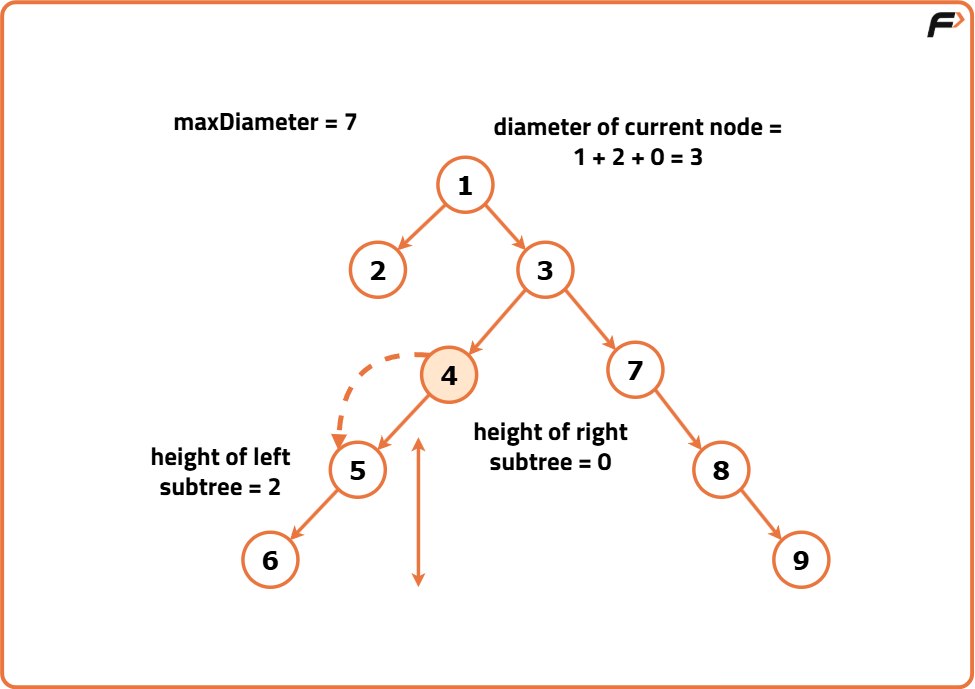
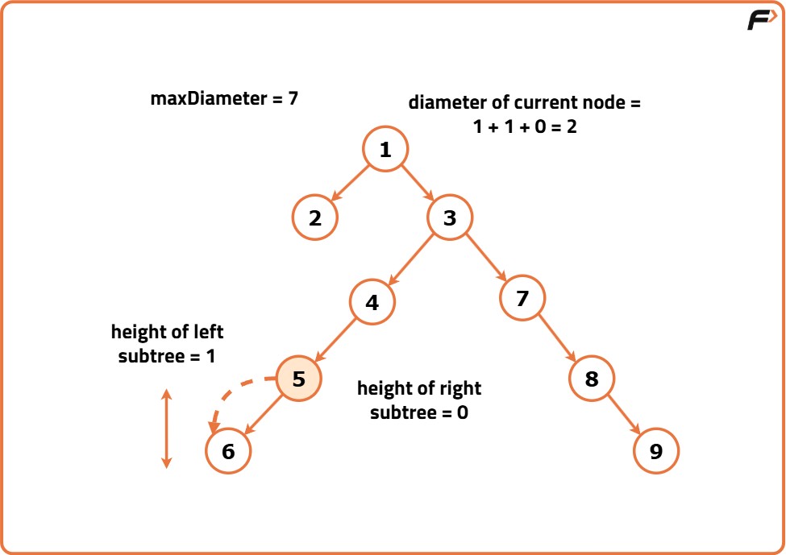
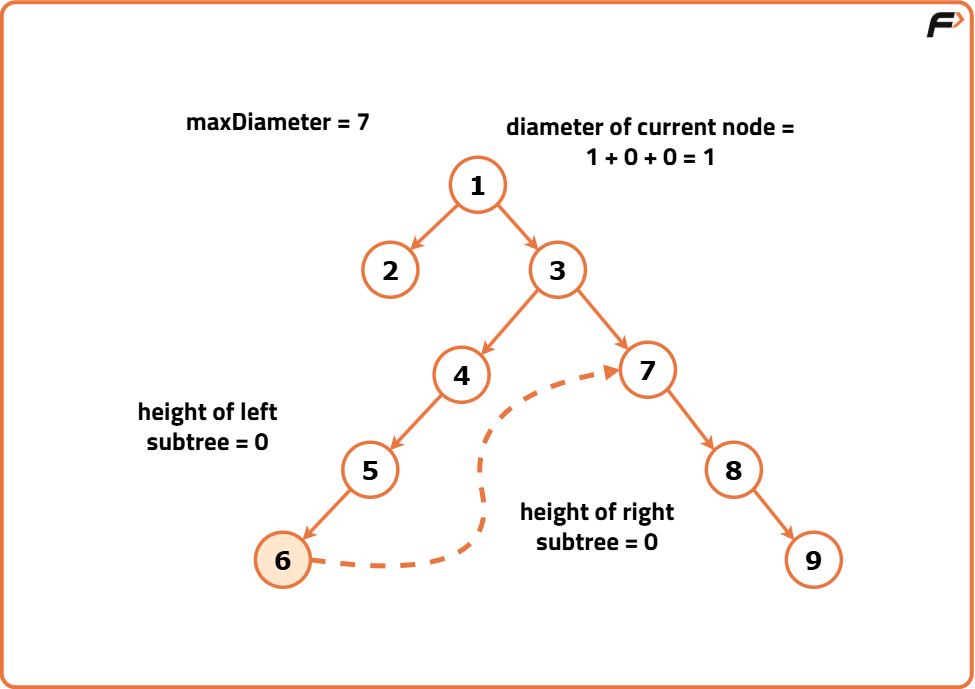
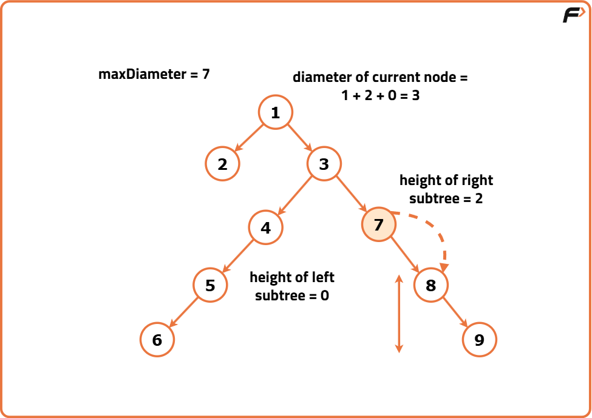
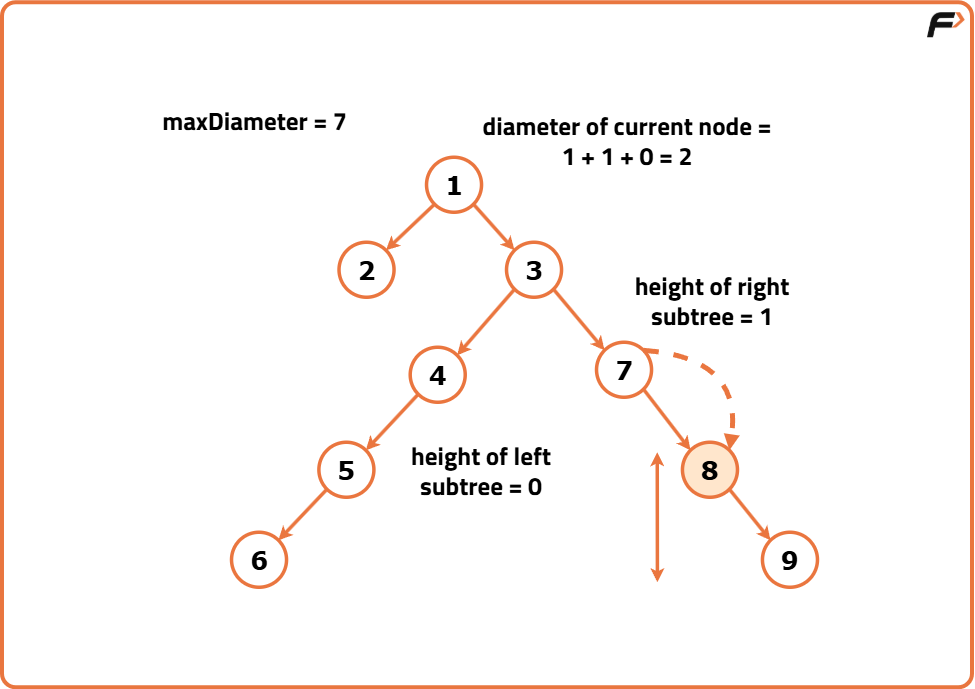
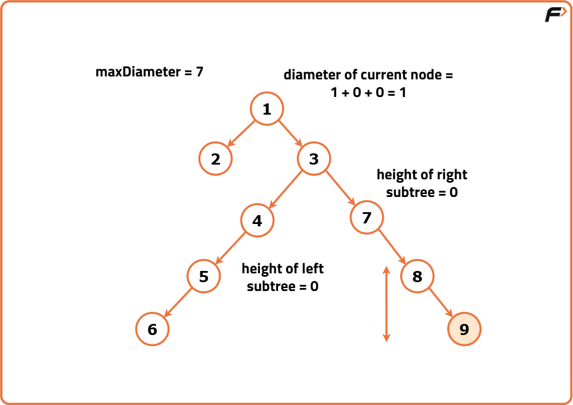
Code
#include <iostream>
#include <algorithm>
using namespace std;
// Node structure for
// the binary tree
struct Node {
int data;
Node* left;
Node* right;
// Constructor to initialize
// the node with a value
Node(int val) : data(val), left(nullptr), right(nullptr) {}
};
class Solution {
public:
// Global variable to
// store the diameter
int diameter = 0;
// Function to calculate
// the height of a subtree
int calculateHeight(Node* node) {
if (node == nullptr) {
return 0;
}
// Recursively calculate the
// height of left and right subtrees
int leftHeight = calculateHeight(node->left);
int rightHeight = calculateHeight(node->right);
// Calculate the diameter at the current
// node and update the global variable
diameter = max(diameter, leftHeight + rightHeight);
// Return the height
// of the current subtree
return 1 + max(leftHeight, rightHeight);
}
// Function to find the
// diameter of a binary tree
int diameterOfBinaryTree(Node* root) {
// Start the recursive
// traversal from the root
calculateHeight(root);
// Return the maximum diameter
// found during traversal
return diameter;
}
};
// Main function
int main() {
// Creating a sample binary tree
Node* root = new Node(1);
root->left = new Node(2);
root->right = new Node(3);
root->left->left = new Node(4);
root->left->right = new Node(5);
root->left->right->right = new Node(6);
root->left->right->right->right = new Node(7);
// Creating an instance of the Solution class
Solution solution;
// Calculate the diameter of the binary tree
int diameter = solution.diameterOfBinaryTree(root);
cout << "The diameter of the binary tree is: " << diameter << endl;
return 0;
}
Complexity Analysis
Time Complexity: O(N*N) where N is the number of nodes in the Binary Tree.
Space Complexity : O(1) as no additional data structures or memory is allocated.
Optimal Approach
Algorithm
The earlier method took extra time because it kept recalculating the depth of subtrees again and again. This repetition made the solution slower, especially for larger trees. To make it faster, we can work from the bottom of the tree upwards, calculating heights only once.
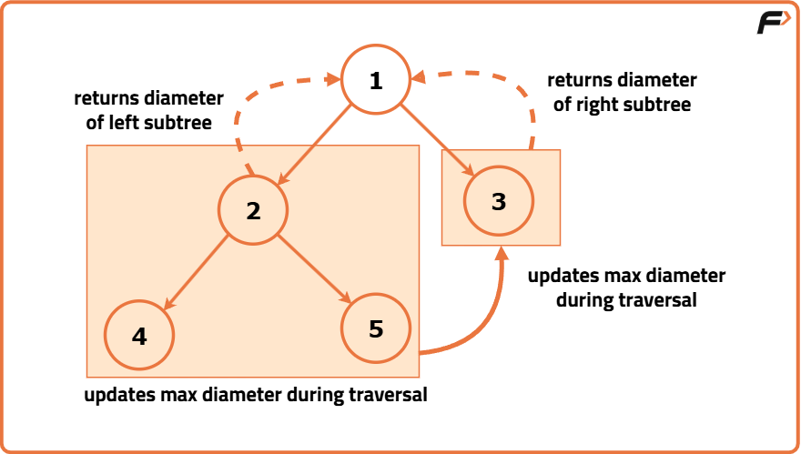
Otherwise, do the following:
- Measure how deep the left part goes, then do the same for the right part.
- Add the two depths and 1 (for the current point) to get the width at this point.
- Compare this width with the largest one we've seen so far and update it if it's bigger.
Dry Run
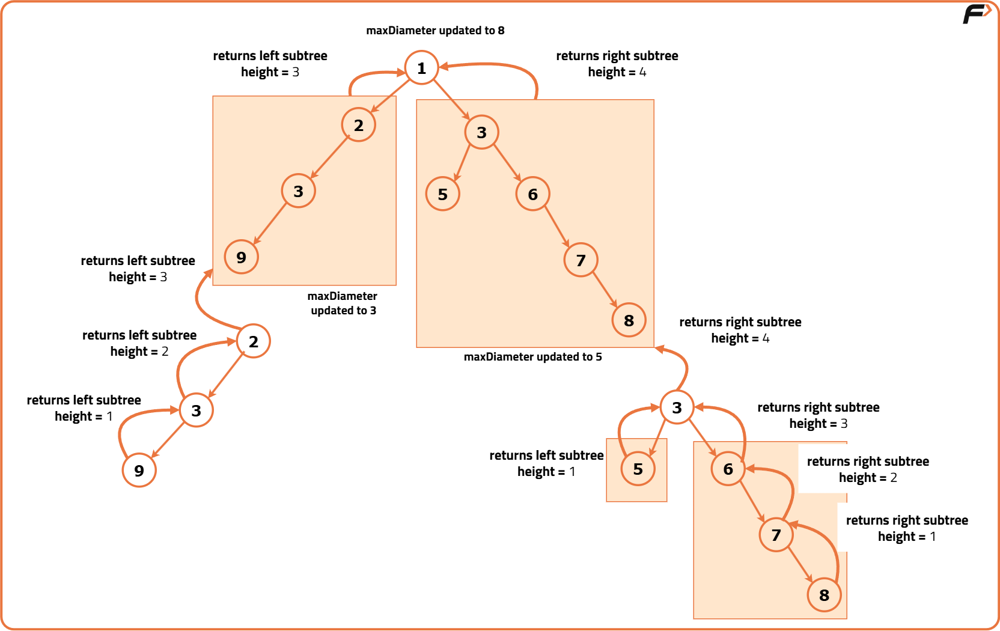
When we've gone through all parts of the tree, the largest width recorded is the final diameter.
Code
#include <iostream>
#include <algorithm>
using namespace std;
// Node structure for the binary tree
struct Node {
int data;
Node* left;
Node* right;
// Constructor to initialize
// the node with a value
Node(int val) : data(val), left(nullptr), right(nullptr) {}
};
class Solution {
public:
// Function to find the
// diameter of a binary tree
int diameterOfBinaryTree(Node* root) {
// Initialize the variable to
// store the diameter of the tree
int diameter = 0;
// Call the height function to traverse
// the tree and calculate diameter
height(root, diameter);
// Return the calculated diameter
return diameter;
}
private:
// Function to calculate the height of
// the tree and update the diameter
int height(Node* node, int& diameter) {
// Base case: If the node is null,
// return 0 indicating the
// height of an empty tree
if (!node) {
return 0;
}
// Recursively calculate the
// height of left and right subtrees
int lh = height(node->left, diameter);
int rh = height(node->right, diameter);
// Update the diameter with the maximum
// of current diameter or sum of
// left and right heights
diameter = max(diameter, lh + rh);
// Return the height of
// the current node's subtree
return 1 + max(lh, rh);
}
};
// Main function
int main() {
// Creating a sample binary tree
Node* root = new Node(1);
root->left = new Node(2);
root->right = new Node(3);
root->left->left = new Node(4);
root->left->right = new Node(5);
root->left->right->right = new Node(6);
root->left->right->right->right = new Node(7);
// Creating an instance of the Solution class
Solution solution;
// Calculate the diameter of the binary tree
int diameter = solution.diameterOfBinaryTree(root);
cout << "The diameter of the binary tree is: " << diameter << endl;
return 0;
}
Complexity Analysis
Time Complexity: O(N) where N is the number of nodes in the Binary Tree. This complexity arises from visiting each node exactly once during the postorder traversal.
Space Complexity : O(1) as no additional space or data structures is created that is proportional to the input size of the tree.